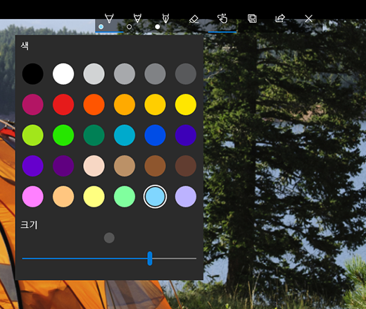

Youtube
#SejongUniversity
#Software
#Youtube
Clone Coding:모바일 유튜브 페이지 따라 만들기
조회수 1억회 | 2020.10.28
1K
0
Share
Save
Report
뭉의 개발일기
구독자 101만명
subscribe
다음 동영상
펭귄을 발음하는 또 다른 방법(feat.베네딕트 컴버배치)
월드이슈
조회수 3천만회 | 2주 전
별의 일주사진을 찍는 방법(핸드폰으로도 가능!)
별잡이튜브
조회수 3.2만회 | 7개월 전

윈도우10에서 전문가처럼 사진 보정하기
짜잘팁
조회수 2.4만회 | 3시간 전